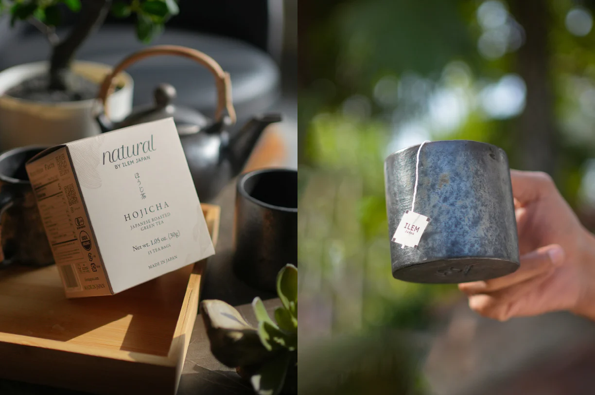
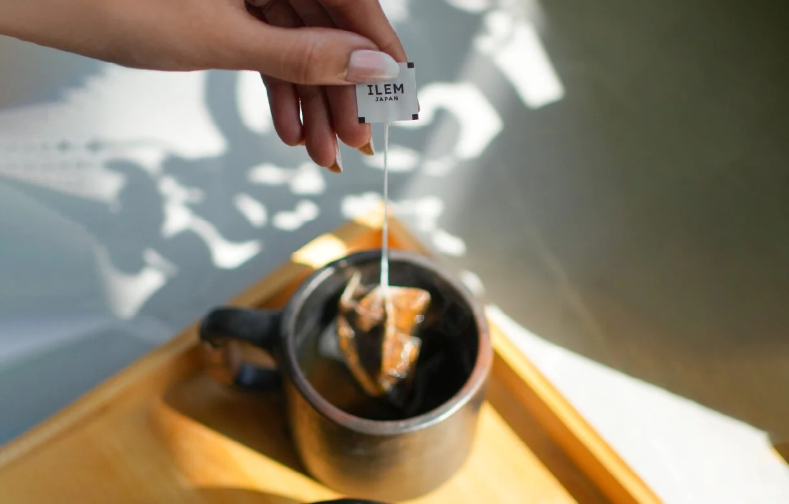
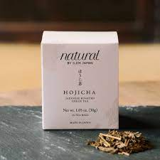
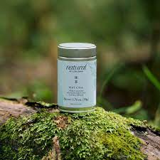

A traditional Japanese brown rice green tea embodying a harmonious fusion of green tea leaves and roasted brown rice.
Harvested and sourced from the pristine fields of South Japan, the journey of our Genmaicha tea begins with the careful selection of high-quality green tea leaves from Kagoshima Prefecture and roasted brown rice. The process involves expertly blending these elements, resulting in a brew rich in vital nutrients. Its warm, nutty taste with a roasted aroma and a subtle sweetness is complemented beautifully by a pale yellow color when brewed. With a moderate caffeine content, each cup of Genmaicha is perfect for unwinding during serene evenings.
Rich in essential nutrients such as vitamin B, protein, calcium, and health-boosting elements including magnesium and iron, Genmaicha embodies a holistic approach. Its inclusion of brown rice moderates the astringency and caffeine levels of green tea, providing a comforting and soothing drink.
With a moderate caffeine content, Genmaicha offers a calming experience, making it an ideal companion for moments of relaxation and tranquility

Make The Perfect Cup
Measure: Add a tea bag to your favorite cup. Pour 230 ml of hot water (70℃).
Brew: Steep the tea for 1 minute. Hotter temperatures reveal a more robust and invigorating flavor.
Delight: Stir the perfectly brewed Genmaicha, gently remove the tea bag, and enjoy!
Relish the comforting and soothing qualities of this delightful tea, perfect for unwinding.

CHECKOUT SIMILAR PRODUCTS
Sencha Japanese Green Tea
Rs. 900.00

Hojicha Japanese Roasted Green Tea
Rs. 900.00

Matcha Japanese Tea
Rs. 1,320.00
Hydrating Asa Banto
Rs. 11,000.00
Frequently Asked Questions
Q. What is Genmaicha Tea, and what makes it unique among other green teas?
ANS:- Genmaicha Tea is a traditional Japanese brown rice green tea that combines green tea leaves with roasted brown rice. Its uniqueness lies in the harmonious blend of green tea's delicate flavor with the nutty, roasted aroma of brown rice, offering a warm and comforting taste distinct from other green teas.
Q. Can Genmaicha Tea be consumed at any time of the day due to its caffeine content?
ANS:- Genmaicha contains a moderate caffeine content, about half of that found in coffee. The mildness of its caffeine levels and less acidic nature make it suitable for consumption
throughout the day, even in the evening, offering a soothing and comforting choice compared to other teas.
Q. What role does brown rice play in Genmaicha Tea?
ANS:- Brown rice added to Genmaicha tea serves to mellow the astringency of green tea and reduce its caffeine levels. This inclusion contributes to the tea's unique taste profile, imparting a warm, nutty flavor with a roasted aroma and slight sweetness.
Q. How should Genmaicha Tea be stored to maintain its freshness?
ANS:- To preserve the freshness of Genmaicha, store it in an airtight container away from heat, light, and moisture. Keeping it in a cool, dry place ensures the retention of its flavors and nutritional richness for an extended period.